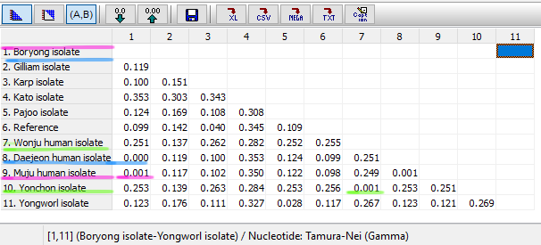
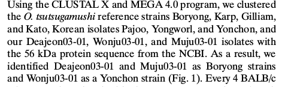

Conclusiones¶
Como se ha comentado al principio del documento, el objetivo de este estudio es determinar el origen de las variantes aisladas de humanos Muju,Daejeon y Wonju. Para ello, hemos realizado el alineamiento de estas secuencias y las secuencias de otras cepas conocidas de la bactera O.tsusugamushi y posteriormente hemos calculado las distancias genéticas para realizar el estudio filogenético.
Las varierades aisladas van a proceder por lo tanto de aquellas cepas a las que se encuentren más cercanas genéticamente.
Recordar que con el modelo de sustitución TN93 + G(0.44) obteniamos las siguientes distancias:
Podemos ver ya con estos resultados que la variedad Muju presenta una distancia genética de 0,001 con la cepa Boryong, mientras que Daejeon presenta una distancia de 0.000. Por lo tanto,podemos afirmar que ambas son variantes de la cepa Boryong y que la variante Muju presenta una mayor divergencia (aunque no mucho mayor) con la cepa de procedencia.
La cepa Wonju presenta una distancia de 0.001 con la cepa Yonchon por lo que se trata de una variante de la misma.
Estos resultados se ven confirmados con lo que podemos deducir del árbol filogenético creado por MEGA.

Estos son los mismos resultados a los que llegaron los autores del artículo:
Destacar que nosotros hemos realizado los árboles siguiendo el método de Neighbour Joining y de Máxima Verosimultud, obteniendo el mismo resultado en ambos casos por lo que la hipótesis queda confirmada. Los diferentes resultados en los valores del bootstrap se pueden explicar por el uso de diferentes modelos de sustitución (que los autores no especificaban) o el empleo de una versión anterior del programa MEGA en el caso de los autores pero en cualquier caso no modifican la conclusión.